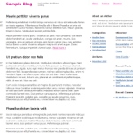

It was built to illustrate the power of Konstruktors CSS snippets for creating grid based layouts. View screenshots and read more about Agneka Simple.

It was built to illustrate the power of Konstruktors CSS snippets for creating grid based layouts. View screenshots and read more about Agneka Simple.
there still seems to be a problem in version 0.4 when it comes to IE7, which the footer goes to the upper right. You could see the working example using IE7 in http://obeertym.deuts.net/
Thanks!
Deuts, the problem seems to be with the CSS styling of
#footerinstyle.cssunder theme’s files.Currently it reads:
#footer { float:right; width:99.9%; clear:both; color:#666; font-size:0.88em; line-height:1.4em; margin:3em 0 1em; padding:1em 0 3em; }Could you try and change it to:
#footer { float:left; width:100%; clear:both; color:#666; font-size:0.88em; line-height:1.4em; margin:3em 0 1em; padding:1em 0 3em; }Let me know if that solves the problem.
Hi, it worked. Thanks. This surely is a great theme.
Can i use it, with Google-Adsens?
Sure, Manuel, you can use it with Google AdSense.
Hi. I just wanted to let you know I’ve added Agneka Simple to http://www.bestwpthemes.com, our list of the coolest WordPress themes on the planet. Good work! Look forward to seeing your other themes.
Matt, thank you for adding the theme!
Kaspars —
This is a really appealing theme, clean lines and very legible. Suddenly today, though, the sidebar dropped down to the bottom of the page and I can’t figure out why. I haven’t changed the width on anything (at least, not on purpose; I suppose I might have done that by accident).
I’ve spent some time looking at the konstruktor css file, and I’m hesitant to muck around in it (even ussing cssedit).
If you have the time, could you look at the site (it’s brand new, still in testing) and see if anything jumps out at you? I’d appreciate any input you might have.
Rosina, I am really glad that you like the theme. I will have a look at it and will tell you how to solve it. At the initial glance it seems to be the width of your “featered”/latest post.
On a sidenote, I suggest you do not edit the
konstruktors.cssfile, but rather thestyle.css, which contains all the styles related to the particular theme.Rosina, I just found the problem. It seems that you (or someone else) had modified the
konstruktors.cssfile:.bb-fc { float:right; clear:both; }This CSS identifier (f — stands for float, c — means right, while a is left, b is middle) is used only for floating elements and it shouldn’t
clear.If an element is cleared on both sides, it can not have any block type elements standing next to it (in this case, on it’s right).
I suggest you replace that
konstruktors.csswith the original from a fresh download and that should solve the problem.Yes indeed, that did fix the problem — thank you so much for your help.
Kaspars — me again. I like the sidebar setup with the dedicated sections, but I’m wondering if there’s a way to fiddle with some of the defaults. For example, the blogroll/links list shows up in the mid-right hand sidebar, but I’d like to replace it with a plugin that allows greater flexibility with organizing links.
Is there a way to suppress the default links that show up and replace them with a different widget (i.e., better blogroll)?
I did have a look around the templates but didn’t fiddle with anything for fear of making a mess.
thanks, as ever
rosina
Rosina, after looking at the website, it seems that you have managed to replace blogroll with another widget. However, if you want to reorder the ‘sidebar areas’ or ‘widget areas’ where you put the widgets in (called
sidebar-something), you can play with this part of code inside the theme files:<div class="bb-tbase"><?php dynamic_sidebar('sidebar-default'); ?></div><div class="bb-t13 bb-fa"><div class="bbin-c1">
<?php dynamic_sidebar('sidebar-postnav'); ?>
</div></div>
<div class="bb-t17 bb-fc">
<?php dynamic_sidebar('sidebar-links'); ?><br />
<?php dynamic_sidebar('sidebar-postrelated'); ?>
</div>
<div class="bb-tbase">
<?php dynamic_sidebar('sidebar-bottom'); ?>
</div>
Please let me know, if you have any questions about how to do anything particular.
great work guys! simple, elegant, most importantly– easy to deal with.
Hi.
I really like this theme, I was considering using it for an upcoming blog with a few tweaks.
But I was trying to replace the Blog title and tag line with an image in the header PHP.
When I insert the image it does not show up and it breaks the grid system.
I tried to keep the image with in the CSS tags.
Is there any trick I am missing?
Steven, could you please email me a design mock-up of the design you are trying to produce?
kaspars, I love this theme but I just discovered that my sidebar goes down (like after the main body) when viewed using IE6 with an average sized monitor. also when I resize the window, the sidebar goes down below the main body.
i didn’t change anything yet from the original theme. is there a way where i can just make the sidebar fixed in a position and not be “fluid” as they say?
another thing that i noticed is that whenever i try to post images, even if I choose center as position of the image, it will always go to the right. please help me!
thanks
hi kaspars,I wonder could you tell how me to change the font sizes of right sidebar a little bigger.it seems unfit for Chinese,I from China.Thanks.